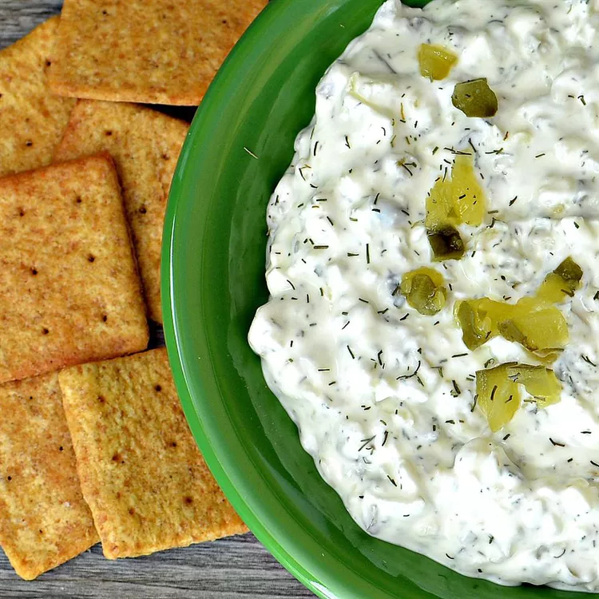

Dill Pickle Dip

Description
Sadly, not everything can be a pickle. But for the things that can't be pickled, there's this Dill Pickle Dip. Try using freshly chopped dill instead (you'll need three times as much what the recipe calls for in dried dill) for even better flavor.
Ingredients
- 1 (8 ounce) package cream cheese, at room temperature
- 1 cup chopped dill pickles, or more to taste
- 1/4 cup finely chopped sweet onion
- 2 tablespoons pickle juice, or more to taste
- 1 teaspoon dried dill weed
- 1/2 teaspoon kosher salt
- 1 pinch freshly ground black pepper, or to taste
Steps
- Stir cream cheese in a bowl with a wooden spoon until smooth. Stir in dill pickles, onion, pickle juice, dill weed, salt, and pepper until evenly distributed. Refrigerate before serving, at least 1 hour.